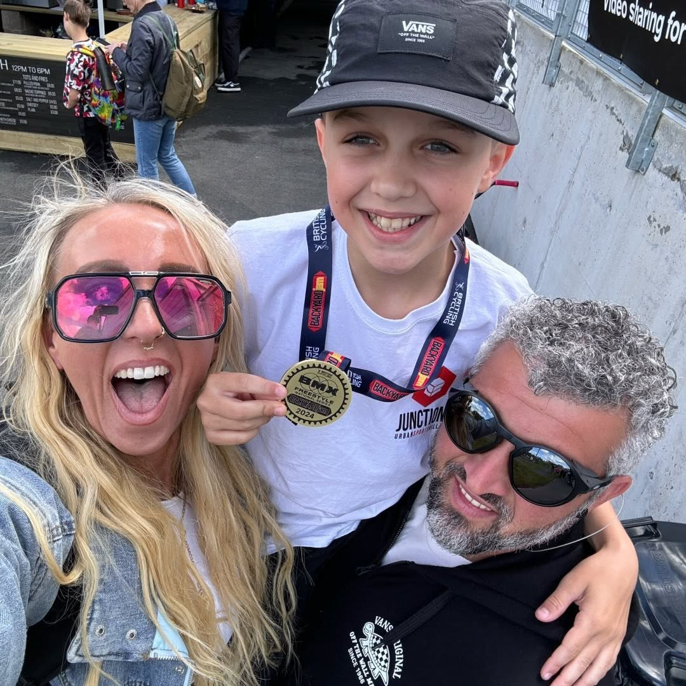
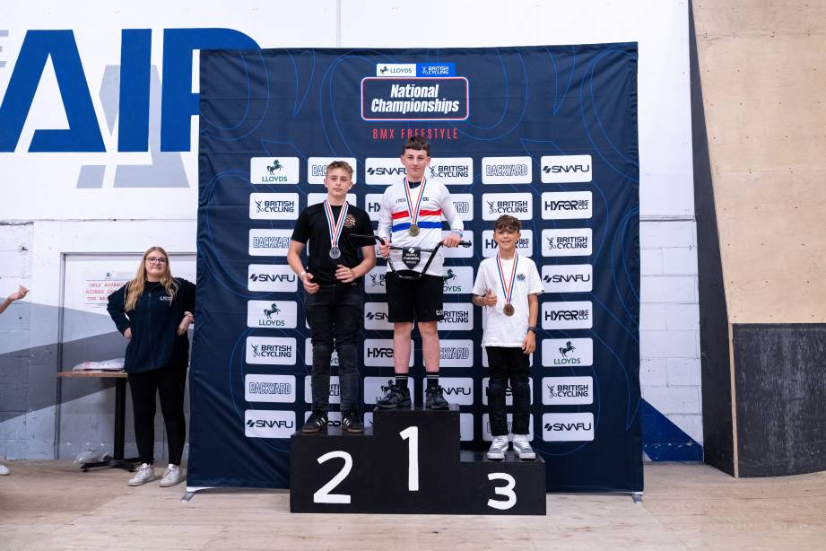
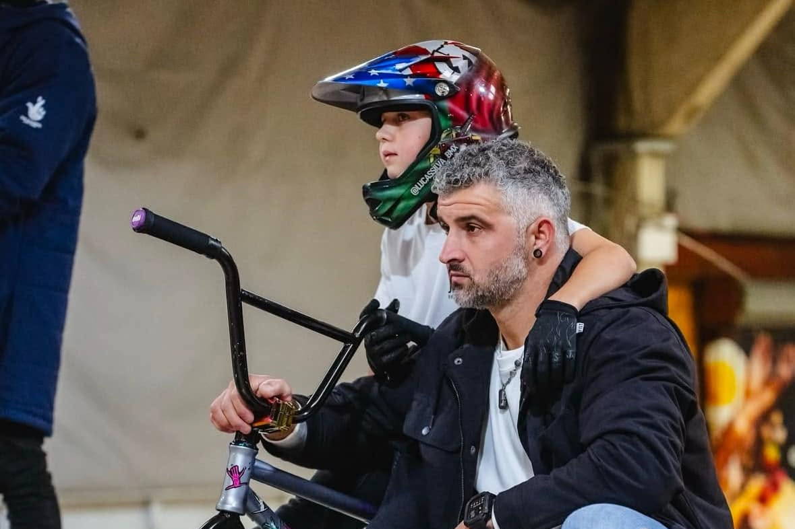

BMX FREESTYLE / RIDER SPOTLIGHT
Lucas Silva: One to Watch on the UK BMX Scene
At just 14, Lucas Silva is already making a name for himself on the UK BMX scene.

With a combination of natural talent, relentless determination and an undeniable passion for BMX, Lucas has continued to progress year after year. Whether learning new tricks, travelling to competitions or putting in the hours at the skatepark, his commitment is evident every time he rides.
His hard work has already begun to pay off.
A breakthrough 2024 season
In 2024, Lucas finished 1st overall in the Under-12 category of the Backyard Jam National BMX Freestyle Series. He also took 1st place in the Under-12 Expert Park Open at Junction 4 Urban Sports Village, establishing himself as one of the country’s exciting young riders.

Stepping up in 2025
Moving into the Under-15 category in 2025 brought a fresh challenge, but Lucas adapted quickly. At the Lloyds BMX Freestyle National Championships, he secured an impressive 3rd-place finish, showing that his progression was continuing as he moved through the ranks.

Taking his riding abroad
Lucas has also started making his mark internationally. In 2025, he travelled to Portugal for the Março Jovem BMX Jam, finishing 7th against a strong field while being the youngest rider in his category. Returning in 2026, he improved on that result with a 5th-place finish, again as the youngest rider in the class.
Progress that keeps building
Away from competition, Lucas’s riding continues to develop. From mastering 360 tailwhips to landing 720s and adding new tricks to his riding, every video shows another step forward.
WATCH LUCAS RIDE
View this Reel on Instagram
More than the contest results
BMX has taken Lucas beyond his local skatepark. Supported by his parents, he has travelled across the UK and Europe and watched some of the sport’s biggest names compete, including at FISE Montpellier. Along the way, he has met BMX heroes such as Harry Main, Ryan Nyquist and Rubén Alcántara.

Lucas is quick to credit his mum and dad. Their support, road trips and belief in him have played a huge role in helping him pursue his passion for BMX.
A rider to watch
Lucas’s progression over the past few years has been remarkable. With his dedication, support network and passion for BMX, the future looks bright. Here at RideWire BMX, we’ll be following his journey with great interest.
← Back to all Spotlights